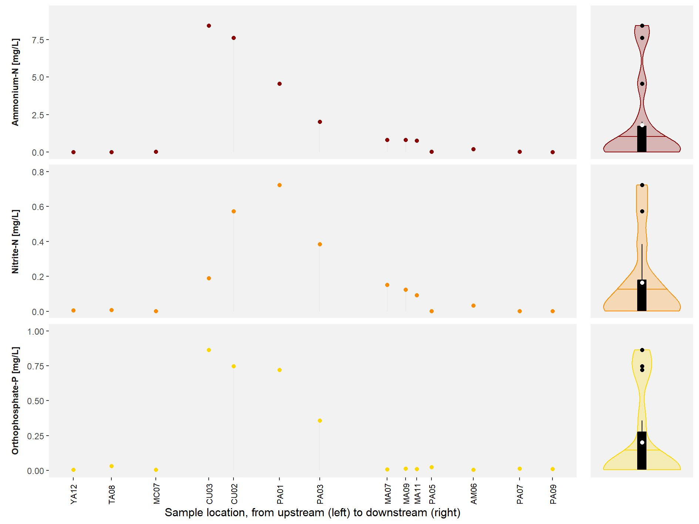

Campaign #6
October-November 2024
On Monday 14 October, we headed out to the field for the first day of the sixth campaign. By now, the experience of the previous campaigns came in handy to access the selected sampling sites and organise the logistics of the field visits. The dry season has had a clear impact on the water levels in the rivers, while the reservoirs were reaching an all time low due to the unprecedented drought. In the end, 51 accessible sites were selected: 30 river/stream sites and 21 reservoir sites.
{kind=link}
Abiotic conditions
We collected information on the abiotic conditions in each of the 51 sampling sites. To get this data, we made use of a multiprobe (a device that measures several conditions at once) on-site and USEPA approved test kits to determine the nutrient concentrations off-site. The collection of this data confirmed the patterns of the previous campaigns and are in line with what we expected. For instance, ammonium and nitrite concentrations directly downstream of the city of Cuenca (site CU03, followed by CU02 and PA01) were higher than all previous campaigns and almost two to five times higher than what we observed in July/August 2024. Also orthophosphate concentrations were clearly higher than before. It is not unthinkable that the extreme drought played a role in these excessive nutrient levels. Equally interesting is the decreasing nutrient levels in the downstream direction, which shows that the Paute river system is able to recover from a signicant pollution event.
Greenhouse gases
In addition to the more standard abiotic conditions, we also collected information on the presence and the emission of greenhouse gases in each of the 51 sampling sites. To get this data, we made use of a the headspace method (mixing 30 mL of water and 30 mL of air) and floating chambers (airtight containers sampled at fixed time intervals) on-site followed by the analysis of the obtained samples off-site. This data already resulted in some interesting patterns that are in line with previous campaigns and the abiotic conditions. For instance, nitrous oxide concentrations and emissions were the lowest in the upstream part of the Paute basin and highest directly downstream of the city of Cuenca (with the exception of site PA07). Similar to earlier observations, the highest concentration was observed in location CU02, while the (second-)highest emission was observed in location PA01 (located closely downstream of CU02). These observations align with the ammonium and nitrogen patterns shown above, illustrating the conversion from ammonium into nitrite in the downstream direction and in the meantime generating the intermediate nitrous oxide.
Summary
A total of 51 sampling sites were selected and assessed for a variety of water quality parameters. The abiotic conditions showed a clear similarity with the previous campaigns, with clearly higher nutrient levels directly downstream of the city of Cuenca. Similarly, also the presence and emission of the considered greenhouse gases were clearly higher during this campaign, especially directly downstream of the city of Cuenca.
More information can be found in the short report on the sixth sampling campaign [link].
Acknowledgement
We would like to thank D.M. Siguencia Calle and D.J. Vimos Loja for their help in collecting the samples in the field as well as their subsequent processing in the lab. We also thank D.G. Zuñiga Villegas for providing us with the necessary transport.